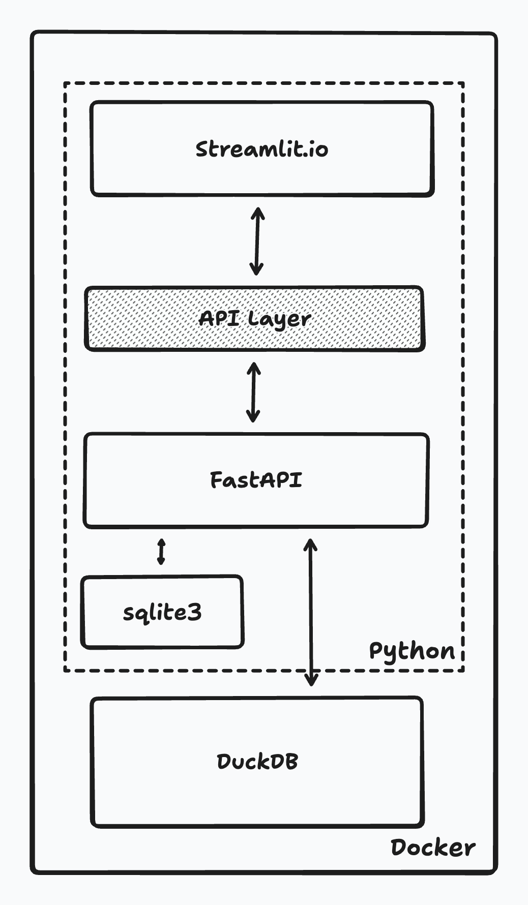

2. Τεχνικά χαρακτηριστικά
Εισαγωγή
Η εφαρμογή PSDB (PISA STUDIES DATA BROKER) έχει κατασκευαστεί χρησιμοποιώντας σύγχρονες τεχνολογίες (Docker, Python, DuckDB, FastAPI, streamlit.io κ.α.) και αποτελείται από δύο τμήματα, το πρώτο τμήμα που αναλαμβάνει την εισαγωγή δεδομένων και το δεύτερο τμήμα της εφαρμογής που είναι υπεύθυνο για την παρουσίαση και εξαγωγή δεδομένων με τη μορφή που επιθυμεί ο χρήστης.
Το πρώτο τμήμα αναλαμβάνει την ανάγνωση των πρωτογενών αρχείων που βρίσκονται σε μορφή sav (αρχεία SPSS) και την εισαγωγή τους στη Βάση Δεδομένων της εφαρμογής (DuckDB). Για να συμβεί αυτό τα αρχεία sav αρχικά μετατρέπονται σε csv αρχεία και στη συνέχεια τα csv αρχεία εισάγονται στη Βάση Δεδομένων. Λόγω του πλήθους των αρχείων, του μεγέθους των αρχείων και της γραμμογράφησής τους, η διαδικασία αυτή γίνεται ως μια batch διαδικασία, ενώ έχει ληφθεί πρόβλεψη έτσι ώστε μεγάλα αρχεία μετά τη φόρτωσή τους στη μνήμη να εισάγονται κατά τμήματα στη Βάση Δεδομένων έτσι ώστε να αποφεύγονται προβλήματα μη απόκρισης της υπολογιστικής υποδομής που εκτελεί την εργασία. Επιπλέον, με την τμηματική εισαγωγή μεγάλων αρχείων η απορρόφηση των δεδομένων καθίσταται ταχύτερη και μπορεί να παρακολουθείται η πρόοδός της. Τα μεγέθη των τμημάτων που έχουν επιλεγεί για τα sav αρχεία είναι της τάξης των 5000 εγγραφών, ενώ για τα csv αρχεία είναι της τάξης των 10000 εγγραφών. Κατά την εισαγωγή των δεδομένων αναγνωρίζεται ο τύπος δεδομένων των επιμέρους πεδίων των πινάκων που εισάγονται στη Βάση Δεδομένων εξετάζοντας για κάθε πεδίο τις πρώτες 5000 εγγραφές κάθε αρχείου έτσι ώστε να αποφευχθούν προβλήματα λανθασμένης επιλογής τύπου δεδομένων.
Το δεύτερο τμήμα της εφαρμογής αφορά τις οθόνες αλληλεπίδρασης του χρήστη με την εφαρμογή όπου ο χρήστης μέσω διαδοχικών επιλογών του επιλέγει τα κριτήρια με βάση τα οποία επιθυμεί να εμφανιστούν και ενδεχόμενα να εξαχθούν δεδομένα από τη Βάση Δεδομένων. Η περιγραφή των επιμέρους οθονών υπάρχει στο τμήμα "3. Λειτουργικότητα" του παρόντος εγχειριδίου.
Τεχνολογική στοίβα (Technology Stack)
Η εφαρμογή έχει κατασκευαστεί έτσι ώστε να αποθηκεύει τα δεδομένα σε μια Βάση Δεδομένων DuckDB (https://duckdb.org/). Η DuckDB είναι μια σχετικά νέα και ανερχόμενη Βάση Δεδομένων που διαθέτει τη βασική για την εφαρμογή δυνατότητα της διατήρησης πινάκων με μεγάλο αριθμό στηλών. Η δημιουργία της διεπαφής και η πρόσβαση της στη Βάση Δεδομένων έγινε με τη γλώσσα Python και τη βιβλιοθήκη κατασκευής δυναμικών ιστοσελίδων Streamlit (https://streamlit.io/). Επιπλέον χρησιμοποιήθηκαν οι ακόλουθες βιβλιοθήκες της γλώσσας Python:
- pandas
- plotly
- sqlite3
- fastapi
Για την αυτόματη εκκίνηση της εφαρμογής χρησιμοποιήθηκε το Docker (https://www.docker.com/). Δημιουργήθηκε μια εικόνα (docker image) που περιέχει την πλήρη εφαρμογή και η ενεργοποίηση της εκτέλεσης της εφαρμογής καθώς και η αντικατάστασή της με ενημερωμένη έκδοση όταν αυτό απαιτείται αυτοματοποιήθηκε. Μια εικόνα της τεχνολογικής στοίβας που χρησιμοποιήθηκε παρουσιάζεται στη συνέχεια:

Ασφάλεια
Η Βάση Δεδομένων που χρησιμοποιεί η εφαρμογή βρίσκεται σε κατάσταση read only (μόνο για ανάγνωση) γεγονός που επιτρέπει ταχύτερη απόκριση και αποτρέπει μη εξουσιοδοτημένες αλλαγές. Επίσης, η εκτέλεση της εφαρμογής μέσα από το docker ενισχύει περαιτέρω από πλευράς ασφάλειας την εφαρμογή. Ειδικότερα, μέσω του docker επιτυγχάνεται:
- απομόνωση της εφαρμογής από άλλες εφαρμογές που εκτελούνται στο ίδιο σύστημα,
- μείωση της λεγόμενης επιφάνειας επίθεσης καθώς εκτελούνται μόνο οι απόλυτα απαιτούμενες υπηρεσίες,
- δημιουργία εύκολα αναπαράξιμου περιβάλλοντος εφαρμογής και
- διευκόλυνση διορθώσεων και αλλαγών στην εφαρμογή.
Η πρόσβαση στην εφαρμογή γίνεται από εξουσιοδοτημένους χρήστες.
Πολυγλωσσική διεπαφή
Η εφαρμογή είναι πολυγλωσσική (multilingual) και υποστηρίζει τις γλώσσες Ελληνικά και Αγγλικά. Η επιλογή γλώσσας για τη διεπαφή της εφαρμογής γίνεται από την αρχική σελίδα της εφαρμογής και είναι δυναμική, δηλαδή δεν απαιτεί την επανεκκίνηση της εφαρμογής.
Δυναμικά γραφικά
Ορισμένες γραφικές παραστάσεις της εφαρμογής δίνουν τη δυνατότητα στο χρήστη να αλληλεπιδράσει με το γράφημα, όπως για παράδειγμα στο "Τάσεις μεταβλητών ανα κύκλο". Αυτό γίνεται με χρήση του module st_echarts του streamlit.io και η παραμετροποίηση του γίνεται σε επίπεδο εφαρμογής με JSON αρχεία.
Διαχείριση χρηστών
Οι χρήστες της εφαρμογής χωρίζονται σε δύο κατηγορίες, τους απλούς χρήστες και τους διαχειριστές (administrators). Οι διαχειριστές έχουν τη δυνατότητα να αποδέχονται νέους χρήστες, να καθιστούν χρήστες ανενεργούς και να αλλάζουν την κατηγορία χρηστών από την κατηγορία απλών χρηστών σε διαχειριστές και αντίστροφα. Η εφαρμογή επιτρέπει τη γρήγορη δημιουργία νέου λογαριασμού μέσω SSO (Single Sign On) της Google. Ο χρήστης αιτείται τη δημιουργία νέου λογαριασμού στην εφαρμογή χρησιμοποιώντας τα credentials λογαριασμού Google που διαθέτει και η κατάσταση του λογαριασμού του καθίσταται "υπό έγκριση". Ο δε διαχειριστής ειδοποιείται με email για ενεργοποίηση του λογαριασμού.